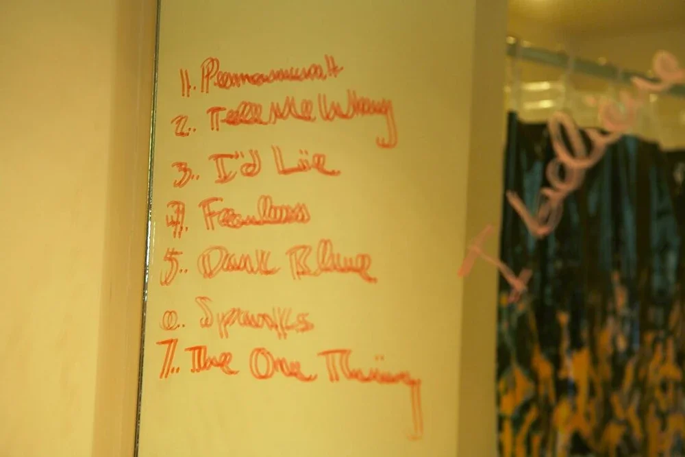

Bye Bye Baby

Written By Taylor Swift & Liz Rose
Produced By Taylor SWift & Jack Antonoff
About
From Genius, the ultimate source of music knowledge
Track 26 on "Fearless".
"Bye Bye Baby" was originally an album outtake from Taylor Swift's second studio album Fearless, before being re-recorded for Fearless (Taylor's Version). A picture of Taylor's early concept tracklist for Fearless shows that the original title for this song was "The One Thing". Multiple lyrics were changed from the demo to final production. It was likely taken off of the original tracklist because of its similarities to Michelle Branch's Goodbye To You.

Lyrics
[Verse 1]
It wasn't just like a movie
The rain didn't soak through my clothes, down to my skin
I'm drivin' away and I, I guess you could say
This is the last time I'll drive this way again
Lost in the gray and I try to grab at the fray
'Cause I, I still love you but I can't
[Chorus]
Bye bye to everything I thought was on my side
Bye bye, baby
I want you bad but it's come down to nothing
And all I have is your sympathy
'Cause you took me home but you just couldn't keep me
Bye bye, baby
Bye bye, baby
[Verse 2]
The picture frame is empty
On the dresser, vacant just like me
I see your writing on the dash
Then back to your hesitation
I was so sure of everything
Everything I thought we'd always have
Guess I never doubted it
Then the here and the now floods in
Feels like I'm becoming a part of your past
[Chorus]
Bye bye to everything I thought was on my side
Bye bye, baby
I want you bad but it's come down to nothing
And all I have is your sympathy
'Cause you took me home but you just couldn't keep me
Bye bye, baby
[Bridge]
And there's so much that I can't touch
You're all I want but it's not enough this time
And all the pages are just slipping through my hands
And I'm so scared of how this ends
[Chorus]
Bye bye to everything I thought was on my side
Bye bye, baby
I want you bad but it's come down to nothing
And all I have is your sympathy
'Cause you took me home but you just couldn't keep me
[Chorus]
Bye bye to everything I thought was on my side
Bye bye, baby
I want you bad but it's come down to nothing
And all I have is your sympathy
'Cause you took me home but you just couldn't keep me
Oh, you took me home, I thought you were gonna keep me
Bye bye, baby
Bye bye, baby